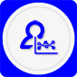

Hadoop物联云平台
提供一个云端应用程序支持平台，自有品牌厂商可以利用这个平台容易且成本有效地将任何设备连接到互联网上。我们通用的软件都创建了一个自适应网络以加速智能交互式产品解决方案通过设备连接到云端再到应用程序的开发和支持。物联网云端网络将创新的云端服务和强大的嵌入到物联网连接设备与移动设备应用程序中的软件代理固件结合起来。领先的设备制造商、服务提供商和大型零售商都使用物联网快速地将安全连接和数据智能整合到产品中。而无需对现有的业务模式做任何实质性的设计修改或变更，并能得到终端客户的理解和赞赏。
1.应用领域：物联网、测控、测量、工业控制、智能制造和工业4.0、互联网+
功能定位：
海道普（Hadoop）物联云是一个物联网/智能硬件云服务平台，提供了一系列物联网硬件开发 工具以及服务，包括：硬件接入服务、开放平台服务以及统计分析服务。
提供通用的Hadoop支撑平台，用户不需要搭建自己的云平台、大数据平台；
提供二次开发的SDK和API，用户在Hadoop平台上在线定制自己的应用系统，并运行在Hadoop平台
提供现场终端网关硬件参考设计板，以及源代码、SDK和API，用户将软件嵌入到自己的终端设备中，也可以直接将我们硬件板应用到自己的设备中；
提供用户APP。
市场定位：
具有研发能力的创客、高校院所、创新创业团队、企事业行业用户。 为物联网领域客户提供云平台支持与数据服务。
开发者使用手册
1.通过海道普（Haidop）物联云平台配合HaidopBoard开发板，快速完成物联网设备原型开发。让开发者快速把想法变成产品。
2.开发者只需完成界面用户体验层的开发，集成SDK后即完成一款智能硬件App开发。
3. 海道普（Haidop）物联云平台让第三方应用开发者为其客户提供应用开发服务。
客户使用手册
1.通过海道普（Hadoop）物联云平台，厂商可以自助、快速的实现硬件产品的云端接入。
2. 海道普（Hadoop）物联云平台提供物联网设备网络连接、远程操控的云服务。
3. 海道普（Hadoop）物联云平台提供设备数据的统计分析和运算处理。
Hadoop平台体系结构
1）嵌入式电路板模块
嵌入式固件在物联网设备或物联网设备网关上运行。他们将完全优化的网络数据包和附加协议合并在一起，再将设备与云服务相连接。
2）云服务的大数据平台
分布式的基于云计算的架构提供前所未有的高效的连通性能。分析服务提供智能的见解与自动化操作，该操作转换自从设备中收集的数据与从第三方云端收集的信息流。应用程序启用服务简化了强大的用户特性的应用程序的开发。可操作的支持服务通过提供领域内设备的可见性，用户控制政策与自动化远程软件升级程序服务于规模客户。
（3）移动或Web客户端应用程序
应用程序库提供应用程序接口来创建应用程序安全地控制在智能手机或平板电脑，或网页接口上使用服务的产品。通过提取安全性与协议的复杂性与其他平台交流，应用程序库给开发人员一个很容易交互的虚拟设备对象。
海道普（Hadoop）物联云平台安全保障
安全连接
- 128位SSL加密
终端到终端地保护用户隐私。确保用户数据和关键信息不被泄露。
- 源头重点保护
源头重点保护：设备密钥，在工厂就焊接到连接模块。
- 多层次认证
多层认证：云端执行设备、应用程序和用户的身份验证，保护完整性和防止盗版。
海道普（Hadoop）物联云平台功能优势
物联网数据模式
-
设备虚拟化
虚拟设备定义保存在云端，与数据存储架构分开，这样易于支持设备变化。
- 数据可视化
使用海道普内置的报告和可视化工具来查看并使用你自助商业智能收集的数据。
- 用户行为分析

识别用户操作和使用意向来指导产品改进、诊断问题以及寻找新的发展机会。
- 便携式用户设置
偏好和设置保存在云端，让用户在所有设备上一登录就能体验一模
- 云间应用程序接口
有效地利用任一第三方扩展功能和应用程序集成的云服务来导入/导出数据，以致扩展自身的功能和应用程序集成。
- 云-企业应用程序接口
使用软件架构应用程序接口集成到你的企业网页
操作模式
- 设备定位
在分层地图上采用自定义视图定位设备，如热门地图，最近使用的设备等。
- 审计日志记录
为了安全检查和遵守协议，所有平台活动都被记录。
- 弹性云计算
无论你的销售增长有多快，海道普都可以快速地扩展你的业务、数据流、并分析负载量。
- 全球云足迹
云业务覆盖亚洲、美洲和欧洲，以适应你的全球业务发
- 在线升级管理
系统地推动行业内的设备升级，如增加补丁或添加功能。
- 用户政策管理
利用全面政策控制和可见性定义不同用户类型——客户、经销商、安装用户和制造商。
- 设备管理
搜索、查看和管理您所有的设备，通过类型、时间、地点等进行搜索。
- 深入诊断
每个设备的可诊断性和可见性利于快速解决问题，并提高客户支持度。
- 开放的平台架构
已发行的应用程序接口，多选项的集成以及适应最新标准的程序大大提高了产品灵活性和永久性。